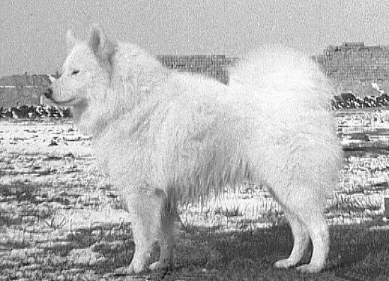

사모예드란 러시아의 시베리아 지역이 원산인 개의 일종. 대형견에 속한다.

러시아의 시베리아 툰드라 지방에서 생활하던 사모예드족이 기르던 개로, 사역견으로서 사냥, 썰매 등 척박한 환경에서 각종 노동을 거드는 개였다. 우리네 조상들이 품을 팔 듯, 이 녀석들도 일거리 있는 집안으로 서로 빌려주고 빌려오고를 수백, 수천 년 반복하여 개량 되어왔으며, 알래스칸 말라뮤트, 시베리안 허스키 역시 비슷한 궤를 달리고 있다.
본래 사모예드족의 사역견이던 사모예드는 유럽에서 극지 탐험이 유행하던 20세기 초에 극지 탐험용 썰매개를 극지 원주민들에게서 배우는 과정에서 유럽으로 들어오게 되었다. 영국에서 품종을 확립하는 데 사용된 개 중 하나인 Antarctic Buck은 Carsten Borchgrevink 원정대의 생존자였으며 시드니 동물원에서 발견되어 Kilburn-Scott 씨가 영국으로 데려왔다. 당초 영국 땅을 밟은 사모예드는 대부분 흑색모와 갈색모였지만, 인기가 많았던 백색모의 사모예드만을 한정적으로 교배한 결과 현재 사모예드하면 떠오르는 백색모종이 압도적으로 많아지게 되었다. 그리고 1912년 영국에서 정식 견종으로 등록되었다.
도둑이 들면 그 도둑이랑도 놀아줄 정도라는 말이 있을 정도로 대인 경계심이 적기에, 사람을 대상으로 하지 않는 경비견으로서 믿음직하다. 성인인 주인뿐만 아니라 아기들한테도 놀아줄 정도로 나긋나긋하고 긍정적인 에너지가 넘치는 견종이다.
수다쟁이라는 별명이 있는데 같은 사모예드는 종끼리 만나면 서로 대화를 자주한다. 유난히 다른 종하고는 그렇게 많이 대화하지는 않는다.
성격이 워낙 좋지만 크기가 커서 키우기 난해하다고 생각했는지 일본에선 따로 품종 개량을 해서 소형화된 사모예드를 키우는데, 이것은 재패니즈 스피츠라고 따로 부른다.